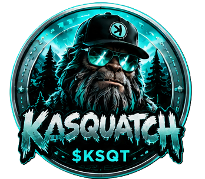

Blockchain Development
Hands-on work around blockchain technology, systems thinking, and the software that makes complex ideas more tangible.

01 Development team under NF Projects
Kasual Labz explores blockchain technology, cryptocurrency tools, mining software, and the useful applications found between a concept and a working build.
A working method, not a slogan
Kasual Labz is the development team under NF Projects. We turn ideas into working software through experimentation, testing, and iteration—keeping the work grounded in what it needs to do.
We are interested in emerging technology when it earns a practical place in the build: a better tool, a clearer workflow, a more useful prototype, or a system worth understanding from the inside out.

What we return to
Hands-on work around blockchain technology, systems thinking, and the software that makes complex ideas more tangible.
Tools and software explorations shaped around mining workflows, technical constraints, and clear utility.
Focused prototypes and useful applications that give an idea enough form to be tested, improved, or taken further.
The workbench

Kasual Labz / token project
The legendary KCC-20 meme token has officially launched on Kaspa through Kasseal.
Explore KasquatchKasual Labz / mobile software
An Android ARM64 mobile mining application for Tari (XTM), currently undergoing final release preparation.
Upcoming software releaseKasual Labz / in development
An upcoming blockchain development project. Additional details will be announced when ready.
Start a conversation
For questions, collaborations, or a direct introduction to the lab, use the channels below.